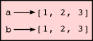
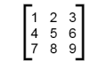

11. Lists¶
A list is an ordered collection of values. The values that make up a list are called its elements, or its items. We will use the term element or item to mean the same thing. Lists are similar to strings, which are ordered collections of characters, except that the elements of a list can be of any type. Lists and strings — and other collections that maintain the order of their items — are called sequences.
11.1. List values¶
There are several ways to create a new list; the simplest is to enclose the elements in square brackets ([ and ]):
The first example is a list of four integers. The second is a list of three strings. The elements of a list don’t have to be the same type. The following list contains a string, a float, an integer, and (amazingly) another list:
A list within another list is said to be nested.
Finally, a list with no elements is called an empty list, and is denoted [].
We have already seen that we can assign list values to variables or pass lists as parameters to functions:
11.2. Accessing elements¶
The syntax for accessing the elements of a list is the same as the syntax for accessing the characters of a string — the index operator: [] (not to be confused with an empty list). The expression inside the brackets specifies the index. Remember that the indices start at 0:
>>> numbers[0] 17
Any expression evaluating to an integer can be used as an index:
>>> numbers[9-8] 5 >>> numbers[1.0] Traceback (most recent call last): File "<interactive input>", line 1, in <module> TypeError: list indices must be integers, not float
If you try to access or assign to an element that does not exist, you get a runtime error:
>>> numbers[2] Traceback (most recent call last): File "<interactive input>", line 1, in <module> IndexError: list index out of range
It is common to use a loop variable as a list index.
Each time through the loop, the variable i is used as an index into the list, printing the i‘th element. This pattern of computation is called a list traversal.
The above sample doesn’t need or use the index i for anything besides getting the items from the list, so this more direct version — where the for loop gets the items — might be preferred:
11.3. List length¶
The function len returns the length of a list, which is equal to the number of its elements. If you are going to use an integer index to access the list, it is a good idea to use this value as the upper bound of a loop instead of a constant. That way, if the size of the list changes, you won’t have to go through the program changing all the loops; they will work correctly for any size list:
The last time the body of the loop is executed, i is len(horsemen) - 1, which is the index of the last element. (But the version without the index looks even better now!)
Although a list can contain another list, the nested list still counts as a single element in its parent list. The length of this list is 4:
>>> len(["car makers", 1, ["Ford", "Toyota", "BMW"], [1, 2, 3]]) 4
11.4. List membership¶
in and not in are Boolean operators that test membership in a sequence. We used them previously with strings, but they also work with lists and other sequences:
>>> horsemen = ["war", "famine", "pestilence", "death"] >>> "pestilence" in horsemen True >>> "debauchery" in horsemen False >>> "debauchery" not in horsemen True
Using this produces a more elegant version of the nested loop program we previously used to count the number of students doing Computer Science in the section Nested Loops for Nested Data:
11.5. List operations¶
The + operator concatenates lists:
>>> a = [1, 2, 3] >>> b = [4, 5, 6] >>> c = a + b >>> c [1, 2, 3, 4, 5, 6]
Similarly, the * operator repeats a list a given number of times:
>>> [0] * 4 [0, 0, 0, 0] >>> [1, 2, 3] * 3 [1, 2, 3, 1, 2, 3, 1, 2, 3]
The first example repeats [0] four times. The second example repeats the list [1, 2, 3] three times.
11.6. List slices¶
The slice operations we saw previously with strings let us work with sublists:
>>> a_list = ["a", "b", "c", "d", "e", "f"] >>> a_list[1:3] ['b', 'c'] >>> a_list[:4] ['a', 'b', 'c', 'd'] >>> a_list[3:] ['d', 'e', 'f'] >>> a_list[:] ['a', 'b', 'c', 'd', 'e', 'f']
11.7. Lists are mutable¶
Unlike strings, lists are mutable, which means we can change their elements. Using the index operator on the left side of an assignment, we can update one of the elements:
>>> fruit = ["banana", "apple", "quince"] >>> fruit[0] = "pear" >>> fruit[2] = "orange" >>> fruit ['pear', 'apple', 'orange']
The bracket operator applied to a list can appear anywhere in an expression. When it appears on the left side of an assignment, it changes one of the elements in the list, so the first element of fruit has been changed from "banana" to "pear", and the last from "quince" to "orange". An assignment to an element of a list is called item assignment. Item assignment does not work for strings:
>>> my_string = "TEST" >>> my_string[2] = "X" Traceback (most recent call last): File "<interactive input>", line 1, in <module> TypeError: 'str' object does not support item assignment
but it does for lists:
>>> my_list = ["T", "E", "S", "T"] >>> my_list[2] = "X" >>> my_list ['T', 'E', 'X', 'T']
With the slice operator we can update a whole sublist at once:
>>> a_list = ["a", "b", "c", "d", "e", "f"] >>> a_list[1:3] = ["x", "y"] >>> a_list ['a', 'x', 'y', 'd', 'e', 'f']
We can also remove elements from a list by assigning an empty list to them:
>>> a_list = ["a", "b", "c", "d", "e", "f"] >>> a_list[1:3] = [] >>> a_list ['a', 'd', 'e', 'f']
And we can add elements to a list by squeezing them into an empty slice at the desired location:
>>> a_list = ["a", "d", "f"] >>> a_list[1:1] = ["b", "c"] >>> a_list ['a', 'b', 'c', 'd', 'f'] >>> a_list[4:4] = ["e"] >>> a_list ['a', 'b', 'c', 'd', 'e', 'f']
11.8. List deletion¶
Using slices to delete list elements can be error-prone. Python provides an alternative that is more readable. The del statement removes an element from a list:
>>> a = ["one", "two", "three"] >>> del a[1] >>> a ['one', 'three']
As you might expect, del causes a runtime error if the index is out of range.
You can also use del with a slice to delete a sublist:
>>> a_list = ["a", "b", "c", "d", "e", "f"] >>> del a_list[1:5] >>> a_list ['a', 'f']
As usual, the sublist selected by slice contains all the elements up to, but not including, the second index.
11.9. Objects and references¶
After we execute these assignment statements
we know that a and b will refer to a string object with the letters "banana". But we don’t know yet whether they point to the same string object.
There are two possible ways the Python interpreter could arrange its memory:

In one case, a and b refer to two different objects that have the same value. In the second case, they refer to the same object.
We can test whether two names refer to the same object using the is operator:
>>> a is b True
This tells us that both a and b refer to the same object, and that it is the second of the two state snapshots that accurately describes the relationship.
Since strings are immutable, Python optimizes resources by making two names that refer to the same string value refer to the same object.
This is not the case with lists:
>>> a = [1, 2, 3] >>> b = [1, 2, 3] >>> a == b True >>> a is b False
The state snapshot here looks like this:

a and b have the same value but do not refer to the same object.
11.10. Aliasing¶
Since variables refer to objects, if we assign one variable to another, both variables refer to the same object:
>>> a = [1, 2, 3] >>> b = a >>> a is b True
In this case, the state snapshot looks like this:

Because the same list has two different names, a and b, we say that it is aliased. Changes made with one alias affect the other:
>>> b[0] = 5 >>> a [5, 2, 3]
Although this behavior can be useful, it is sometimes unexpected or undesirable. In general, it is safer to avoid aliasing when you are working with mutable objects (i.e. lists at this point in our textbook, but we’ll meet more mutable objects as we cover classes and objects, dictionaries and sets). Of course, for immutable objects (i.e. strings, tuples), there’s no problem — it is just not possible to change something and get a surprise when you access an alias name. That’s why Python is free to alias strings (and any other immutable kinds of data) when it sees an opportunity to economize.
11.11. Cloning lists¶
If we want to modify a list and also keep a copy of the original, we need to be able to make a copy of the list itself, not just the reference. This process is sometimes called cloning, to avoid the ambiguity of the word copy.
The easiest way to clone a list is to use the slice operator:
>>> a = [1, 2, 3] >>> b = a[:] >>> b [1, 2, 3]
Taking any slice of a creates a new list. In this case the slice happens to consist of the whole list. So now the relationship is like this:
Now we are free to make changes to b without worrying that we’ll inadvertently be changing a:
>>> b[0] = 5 >>> a [1, 2, 3]
11.12. Lists and for loops¶
The for loop also works with lists, as we’ve already seen. The generalized syntax of a for loop is:
for VARIABLE in LIST: BODY
So, as we’ve seen
It almost reads like English: For (every) friend in (the list of) friends, print (the name of the) friend.
Any list expression can be used in a for loop:
The first example prints all the multiples of 3 between 0 and 19. The second example expresses enthusiasm for various fruits.
Since lists are mutable, we often want to traverse a list, changing each of its elements. The following squares all the numbers in the list xs:
Take a moment to think about range(len(xs)) until you understand how it works.
In this example we are interested in both the value of an item, (we want to square that value), and its index (so that we can assign the new value to that position). This pattern is common enough that Python provides a nicer way to implement it:
enumerate generates pairs of both (index, value) during the list traversal. Try this next example to see more clearly how enumerate works:
11.13. List parameters¶
Passing a list as an argument actually passes a reference to the list, not a copy or clone of the list. So parameter passing creates an alias for you: the caller has one variable referencing the list, and the called function has an alias, but there is only one underlying list object. For example, the function below takes a list as an argument and multiplies each element in the list by 2:
If we add the following onto our script:
When we run it we’ll get:
[4, 10, 18]
In the function above, the parameter a_list and the variable things are aliases for the same object. So before any changes to the elements in the list, the state snapshot looks like this:

Since the list object is shared by two frames, we drew it between them.
If a function modifies the items of a list parameter, the caller sees the change.
Use the Python visualizer!
We’ve already mentioned the Python visualizer at http://netserv.ict.ru.ac.za/python3_viz. It is a very useful tool for building a good understanding of references, aliases, assignments, and passing arguments to functions. Pay special attention to cases where you clone a list or have two separate lists, and cases where there is only one underlying list, but more than one variable is aliased to reference the list.
11.14. List methods¶
The dot operator can also be used to access built-in methods of list objects. We’ll start with the most useful method for adding something onto the end of an existing list:
>>> mylist = [] >>> mylist.append(5) >>> mylist.append(27) >>> mylist.append(3) >>> mylist.append(12) >>> mylist [5, 27, 3, 12]
append is a list method which adds the argument passed to it to the end of the list. We’ll use it heavily when we’re creating new lists. Continuing with this example, we show several other list methods:
>>> mylist.insert(1, 12) # Insert 12 at pos 1, shift other items up >>> mylist [5, 12, 27, 3, 12] >>> mylist.count(12) # How many times is 12 in mylist? 2 >>> mylist.extend([5, 9, 5, 11]) # Put whole list onto end of mylist >>> mylist [5, 12, 27, 3, 12, 5, 9, 5, 11]) >>> mylist.index(9) # Find index of first 9 in mylist 6 >>> mylist.reverse() >>> mylist [11, 5, 9, 5, 12, 3, 27, 12, 5] >>> mylist.sort() >>> mylist [3, 5, 5, 5, 9, 11, 12, 12, 27] >>> mylist.remove(12) # Remove the first 12 in the list >>> mylist [3, 5, 5, 5, 9, 11, 12, 27]
Experiment and play with the list methods shown here, and read their documentation until you feel confident that you understand how they work.
11.15. Pure functions and modifiers¶
Functions which take lists as arguments and change them during execution are called modifiers and the changes they make are called side effects.
A pure function does not produce side effects. It communicates with the calling program only through parameters, which it does not modify, and a return value. Here is double_stuff written as a pure function:
This version of double_stuff does not change its arguments:
>>> things = [2, 5, 9] >>> xs = double_stuff(things) >>> things [2, 5, 9] >>> xs [4, 10, 18]
An early rule we saw for assignment said “first evaluate the right hand side, then assign the resulting value to the variable”. So it is quite safe to assign the function result to the same variable that was passed to the function:
>>> things = [2, 5, 9] >>> things = double_stuff(things) >>> things [4, 10, 18]
Which style is better?
Anything that can be done with modifiers can also be done with pure functions. In fact, some programming languages only allow pure functions. There is some evidence that programs that use pure functions are faster to develop and less error-prone than programs that use modifiers. Nevertheless, modifiers are convenient at times, and in some cases, functional programs are less efficient.
In general, we recommend that you write pure functions whenever it is reasonable to do so and resort to modifiers only if there is a compelling advantage. This approach might be called a functional programming style.
11.16. Functions that produce lists¶
The pure version of double_stuff above made use of an important pattern for your toolbox. Whenever you need to write a function that creates and returns a list, the pattern is usually:
Let us show another use of this pattern. Assume you already have a function is_prime(x) that can test if x is prime. Write a function to return a list of all prime numbers less than n:
11.17. Strings and lists¶
Two of the most useful methods on strings involve conversion to and from lists of substrings. The split method (which we’ve already seen) breaks a string into a list of words. By default, any number of whitespace characters is considered a word boundary:
>>> song = "The rain in Spain..." >>> wds = song.split() >>> wds ['The', 'rain', 'in', 'Spain...']
An optional argument called a delimiter can be used to specify which string to use as the boundary marker between substrings. The following example uses the string ai as the delimiter:
>>> song.split("ai") ['The r', 'n in Sp', 'n...']
Notice that the delimiter doesn’t appear in the result.
The inverse of the split method is join. You choose a desired separator string, (often called the glue) and join the list with the glue between each of the elements:
>>> glue = ";" >>> s = glue.join(wds) >>> s 'The;rain;in;Spain...'
The list that you glue together (wds in this example) is not modified. Also, as these next examples show, you can use empty glue or multi-character strings as glue:
>>> " --- ".join(wds) 'The --- rain --- in --- Spain...' >>> "".join(wds) 'TheraininSpain...'
11.18. list and range¶
Python has a built-in type conversion function called list that tries to turn whatever you give it into a list.
>>> xs = list("Crunchy Frog") >>> xs ["C", "r", "u", "n", "c", "h", "y", " ", "F", "r", "o", "g"] >>> "".join(xs) 'Crunchy Frog'
One particular feature of range is that it doesn’t instantly compute all its values: it “puts off” the computation, and does it on demand, or “lazily”. We’ll say that it gives a promise to produce the values when they are needed. This is very convenient if your computation short-circuits a search and returns early, as in this case:
In the second test, if range were to eagerly go about building a list with all those elements, you would soon exhaust your computer’s available memory and crash the program. But it is cleverer than that! This computation works just fine, because the range object is just a promise to produce the elements if and when they are needed. Once the condition in the if becomes true, no further elements are generated, and the function returns. (Note: Before Python 3, range was not lazy. If you use an earlier versions of Python, YMMV!)
YMMV: Your Mileage May Vary
The acronym YMMV stands for your mileage may vary. American car advertisements often quoted fuel consumption figures for cars, e.g. that they would get 28 miles per gallon. But this always had to be accompanied by legal small-print warning the reader that they might not get the same. The term YMMV is now used idiomatically to mean “your results may differ”, e.g. The battery life on this phone is 3 days, but YMMV.
You’ll sometimes find the lazy range wrapped in a call to list. This forces Python to turn the lazy promise into an actual list:
>>> range(10) # Create a lazy promise range(0, 10) >>> list(range(10)) # Call in the promise, to produce a list. [0, 1, 2, 3, 4, 5, 6, 7, 8, 9]
11.19. Nested lists¶
A nested list is a list that appears as an element in another list. In this list, the element with index 3 is a nested list:
>>> nested = ["hello", 2.0, 5, [10, 20]]
If we output the element at index 3, we get:
>>> print(nested[3]) [10, 20]
To extract an element from the nested list, we can proceed in two steps:
>>> elem = nested[3] >>> elem[0] 10
Or we can combine them:
>>> nested[3][1] 20
Bracket operators evaluate from left to right, so this expression gets the 3’th element of nested and extracts the 1’th element from it.
11.20. Matrices¶
Nested lists are often used to represent matrices. For example, the matrix:

might be represented as:
>>> mx = [[1, 2, 3], [4, 5, 6], [7, 8, 9]]
mx is a list with three elements, where each element is a row of the matrix. We can select an entire row from the matrix in the usual way:
>>> mx[1] [4, 5, 6]
Or we can extract a single element from the matrix using the double-index form:
>>> mx[1][2] 6
The first index selects the row, and the second index selects the column. Although this way of representing matrices is common, it is not the only possibility. A small variation is to use a list of columns instead of a list of rows. Later we will see a more radical alternative using a dictionary.
11.21. Glossary¶
- aliases
- Multiple variables that contain references to the same object.
- clone
- To create a new object that has the same value as an existing object. Copying a reference to an object creates an alias but doesn’t clone the object.
- delimiter
- A character or string used to indicate where a string should be split.
- element
- One of the values in a list (or other sequence). The bracket operator selects elements of a list. Also called item.
- immutable data value
- A data value which cannot be modified. Assignments to elements or slices (sub-parts) of immutable values cause a runtime error.
- index
- An integer value that indicates the position of an item in a list. Indexes start from 0.
- item
- See element.
- list
- A collection of values, each in a fixed position within the list. Like other types str, int, float, etc. there is also a list type-converter function that tries to turn whatever argument you give it into a list.
- list traversal
- The sequential accessing of each element in a list.
- modifier
- A function which changes its arguments inside the function body. Only mutable types can be changed by modifiers.
- mutable data value
- A data value which can be modified. The types of all mutable values are compound types. Lists and dictionaries are mutable; strings and tuples are not.
- nested list
- A list that is an element of another list.
- object
- A thing to which a variable can refer.
- pattern
- A sequence of statements, or a style of coding something that has general applicability in a number of different situations. Part of becoming a mature Computer Scientist is to learn and establish the patterns and algorithms that form your toolkit. Patterns often correspond to your “mental chunking”.
- promise
- An object that promises to do some work or deliver some values if they’re eventually needed, but it lazily puts off doing the work immediately. Calling range produces a promise.
- pure function
- A function which has no side effects. Pure functions only make changes to the calling program through their return values.
- sequence
- Any of the data types that consist of an ordered collection of elements, with each element identified by an index.
- side effect
- A change in the state of a program made by calling a function. Side effects can only be produced by modifiers.
- step size
- The interval between successive elements of a linear sequence. The third (and optional argument) to the range function is called the step size. If not specified, it defaults to 1.
11.22. Exercises¶
What is the Python interpreter’s response to the following?
>>> list(range(10, 0, -2))
The three arguments to the range function are start, stop, and step, respectively. In this example, start is greater than stop. What happens if start < stop and step < 0? Write a rule for the relationships among start, stop, and step.
Consider this fragment of code:
1 2 3 4 5
import turtle tess = turtle.Turtle() alex = tess alex.color("hotpink")
Does this fragment create one or two turtle instances? Does setting the color of alex also change the color of tess? Explain in detail.
Draw a state snapshot for a and b before and after the third line of the following Python code is executed:
1 2 3
a = [1, 2, 3] b = a[:] b[0] = 5
What will be the output of the following program?
1 2 3 4 5
this = ["I", "am", "not", "a", "crook"] that = ["I", "am", "not", "a", "crook"] print("Test 1: {0}".format(this is that)) that = this print("Test 2: {0}".format(this is that))
Provide a detailed explanation of the results.
Lists can be used to represent mathematical vectors. In this exercise and several that follow you will write functions to perform standard operations on vectors. Create a script named vectors.py and write Python code to pass the tests in each case.
Write a function add_vectors(u, v) that takes two lists of numbers of the same length, and returns a new list containing the sums of the corresponding elements of each:
1 2 3
test(add_vectors([1, 1], [1, 1]), [2, 2]) test(add_vectors([1, 2], [1, 4]), [2, 6]) test(add_vectors([1, 2, 1], [1, 4, 3]), [2, 6, 4])
Write a function scalar_mult(s, v) that takes a number, s, and a list, v and returns the scalar multiple of v by s. :
1 2 3
test(scalar_mult(5, [1, 2]), [5, 10]) test(scalar_mult(3, [1, 0, -1]), [3, 0, -3]) test(scalar_mult(7, [3, 0, 5, 11, 2]), [21, 0, 35, 77, 14])
Write a function dot_product(u, v) that takes two lists of numbers of the same length, and returns the sum of the products of the corresponding elements of each (the dot_product).
1 2 3
test(dot_product([1, 1], [1, 1]), 2) test(dot_product([1, 2], [1, 4]), 9) test(dot_product([1, 2, 1], [1, 4, 3]), 12)
Extra challenge for the mathematically inclined: Write a function cross_product(u, v) that takes two lists of numbers of length 3 and returns their cross product. You should write your own tests.
Describe the relationship between " ".join(song.split()) and song in the fragment of code below. Are they the same for all strings assigned to song? When would they be different?
1
song = "The rain in Spain..."
Write a function replace(s, old, new) that replaces all occurrences of old with new in a string s:
1 2 3 4 5 6 7 8
test(replace("Mississippi", "i", "I"), "MIssIssIppI") s = "I love spom! Spom is my favorite food. Spom, spom, yum!" test(replace(s, "om", "am"), "I love spam! Spam is my favorite food. Spam, spam, yum!") test(replace(s, "o", "a"), "I lave spam! Spam is my favarite faad. Spam, spam, yum!")
Hint: use the split and join methods.
Suppose you want to swap around the values in two variables. You decide to factor this out into a reusable function, and write this code:
1 2 3 4 5 6 7 8 9 10
def swap(x, y): # Incorrect version print("before swap statement: x:", x, "y:", y) (x, y) = (y, x) print("after swap statement: x:", x, "y:", y) a = ["This", "is", "fun"] b = [2,3,4] print("before swap function call: a:", a, "b:", b) swap(a, b) print("after swap function call: a:", a, "b:", b)
Run this program and describe the results. Oops! So it didn’t do what you intended! Explain why not. Using a Python visualizer like the one at http://netserv.ict.ru.ac.za/python3_viz may help you build a good conceptual model of what is going on. What will be the values of a and b after the call to swap?